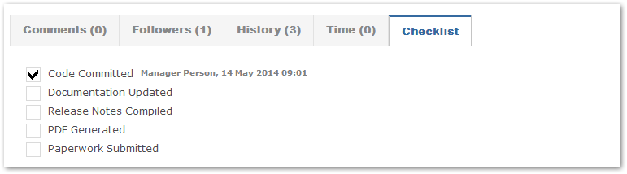
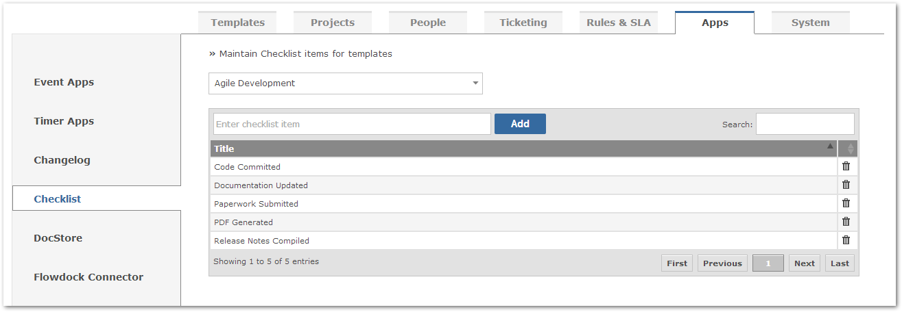
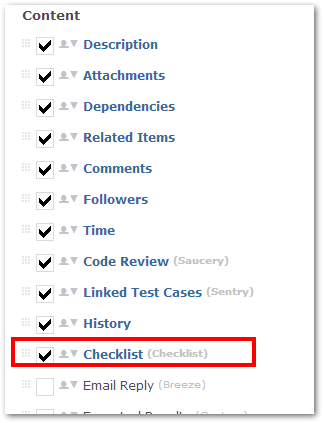

The Checklist app allows users to approve / validate a task by signing their name against the relevant item in the list. For example, in the image below "Code Committed" was signed by "Manager Person".

You will want to first ensure that the Checklist app have checklist options. Please navigate to Customize > Apps > Checklist. From here, you can add new checklist options for project template of your choice.

Make sure “Checklist” is enabled from Customize -> Templates (Select template in question) -> Process (select process in question) screen settings.
